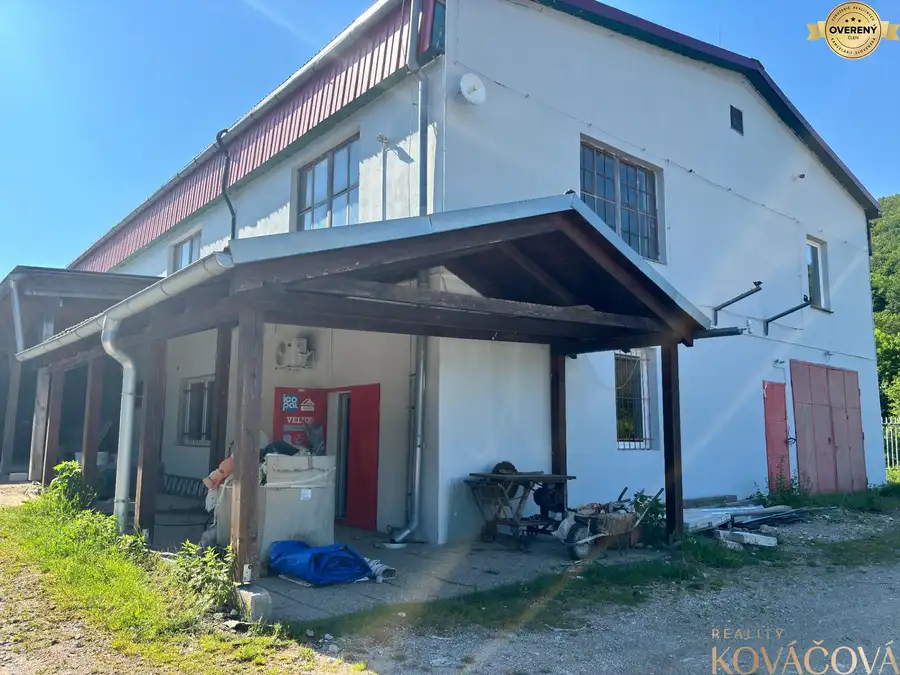
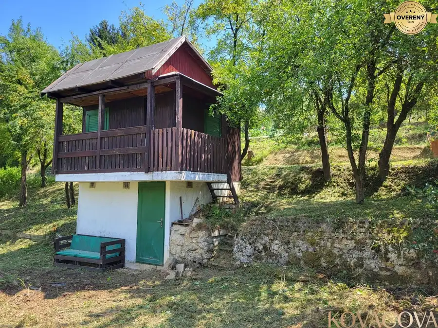
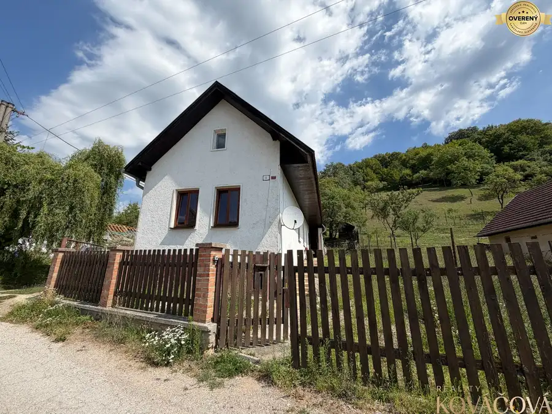

Na predaj chalupa s pozemkom 494 m² – Horná Súča, časť Repákovci
Horná Súča
- Plocha43 m²
- Poschodie0.
- Stavpôvodný
- Vlastníctvoosobné
- Energetická triedaG
O nehnuteľnosti
Realitná kancelária Reality KOVÁČOVÁ ponúka na predaj chalupu v pokojnej časti obce Horná Súča – Repákovci, vhodnú na víkendové pobyty, oddych v prírode, záhradkárčenie alebo ako menšiu nehnuteľnosť na celoročné využitie.
Chalupa je súčasťou staršieho jednopodlažného rodinného dvojdomu postaveného približne v roku 1950. Ide o vidiecky dom, ktorý je rozdelený na dve samostatne užívané časti. Predmetom predaja je jedna z týchto častí, pričom predávaná nehnuteľnosť je na liste vlastníctva evidovaná vo výlučnom vlastníctve majiteľky v podiele 1/1.
Chalupa má podlahovú plochu 43 m² a pozostáva zo vstupnej chodby, kúpeľne s WC a sprchovacím kútom, kuchyne a spálne. V kuchyni sa nachádzajú kachle, ktoré slúžia na vykurovanie a zároveň dotvárajú príjemnú chalupársku atmosféru.
K domu patrí drevená terasa s výmerou 17 m², ktorá poskytuje príjemný priestor na posedenie, grilovanie a oddych počas teplejších mesiacov.
Celková výmera pozemku je 494 m². Na záhrade sú vysadené rôzne úžitkové stromy a nachádza sa tu aj studňa.
Nehnuteľnosť má obecnú vodu a elektrinu a výhodou je tiež vlastná prístupová cesta.
Horná Súča – časť Repákovci ponúka pokojné vidiecke prostredie obklopené prírodou. Chalupa s vlastnou záhradou je ideálnou voľbou na víkendový oddych, záhradkárčenie či trávenie voľného času mimo ruchu mesta, pričom vďaka svojej veľkosti zostáva nenáročná na údržbu.
Cena nehnuteľnosti aj s pozemkom je 49000€. Voľný ihneď.
Miroslava Kováčová
Reality KOVÁČOVÁ
T:
E:
W: realitykovacova.sk
Uvedená cena je konečná, pokiaľ sa zmluvné strany nedohodnú inak, a nenavyšuje sa o odmenu sprostredkovateľa, v cene je zahrnuté právne poradenstvo, vyhotovenie kúpnych zmlúv, hypotekárne poradenstvo a uhradenie správneho poplatku za návrh na vklad do katastra nehnuteľností.
Parametre
| Zastavaná plocha | 60 m² |
|---|---|
| Úžitková plocha | 43 m² |
| Poschodie | prízemie |
| Vlastníctvo | osobné |
| Stav | pôvodný |
| Voda | studňa a vodovod |
| El. napätie | 230/400V |
| Plyn | nie |
| Kanalizácia | žumpa |
| Internet | lokálny poskytovateľ |
| Kúpeľňa | sprchovací kút |
| Vykurovanie | vlastné - pevné palivo |
| Terasa | áno |
| Parkovanie | áno |
| Inžinierske siete | áno |
| Postavené z | tehla |
| Zariadenie | čiastočne |
| Zateplený objekt | nie |
| Energetický certifikát | G |
| Bezbariérový prístup | áno |
| Okná | drevené |
| Terén | mierny svah |
| Dátum zverejnenia | 14. 9. 2026 |
Kde to je
Mohlo by Vás zaujímať

Nebytové priestory2 3 700 €Na prenájom komerčný areál v obci Mníchová Lehota Mníchova Lehota 220 m² Realitná kancelária Reality KOVÁČOVÁ ponúka na prenájom komerčný areál s výbornou dostupnosťou v obci Mníchova Lehota, priamo pri hlavnom ťahu smer…
Chaty a chalupy7 25 000 €Na predaj pozemok s chatkou, Trenčín, Juh - Chrásť Trenčín 332 m² Pozemok s výmerou 332 m² ponúka príjemné miesto na oddych, záhradkárčenie či víkendové úniky z mesta. Súčasťou je murovaná chatka so zastavanou…
Rodinné domy4 85 000 €Na predaj chalupa, Petrova Lehota Petrova Lehota 2-izbový330 m² Realitná kancelária Reality KOVÁČOVÁ ponúka na predaj rodinný dom z roku 1950, ktorý sa nachádza v pokojnej obci Petrova Lehota. Táto obec je…